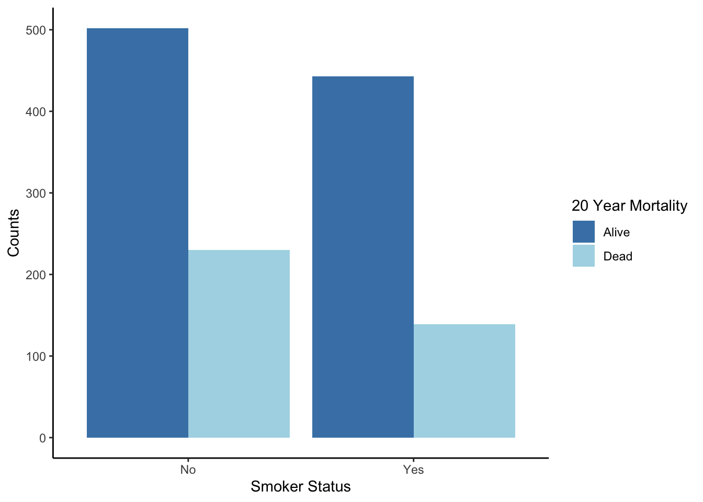
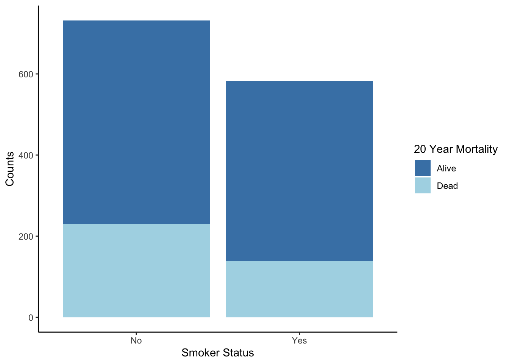
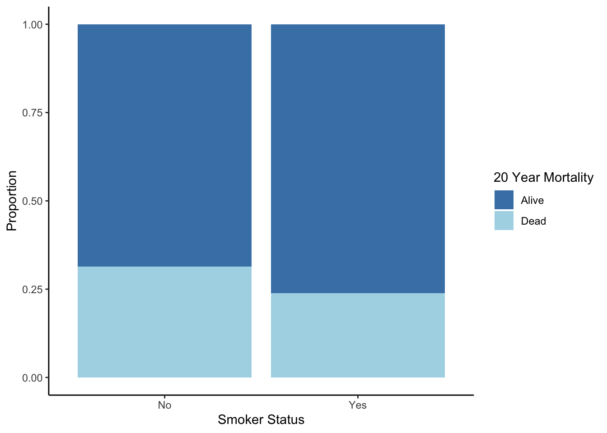
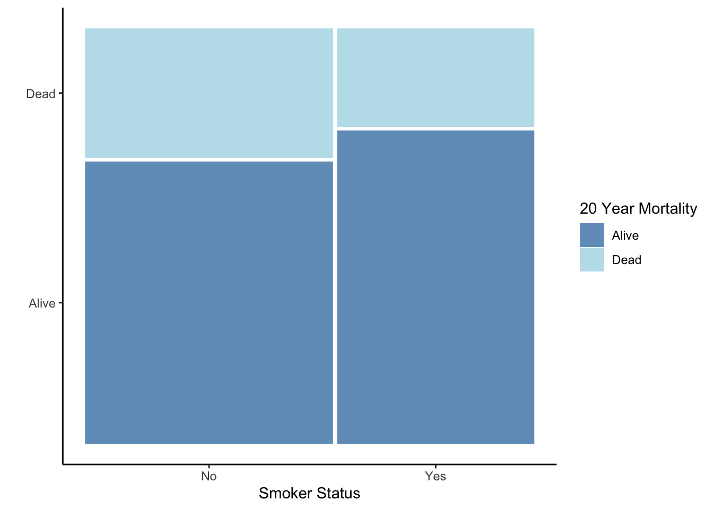
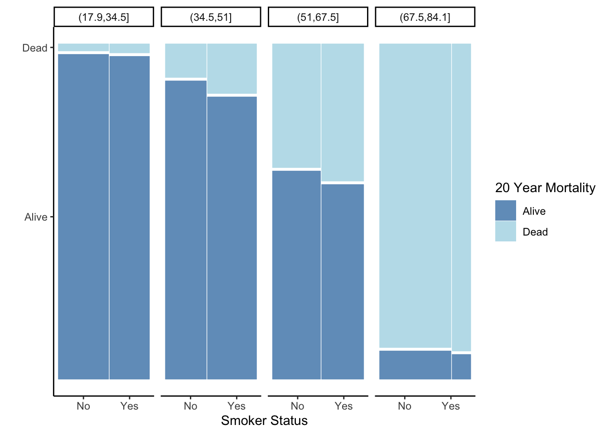

2.5 Two Categorical Variables
Now, let’s consider two other variables in the same Whickham data set. What is the relationship between the 20-year mortality outcome and smoking status at the beginning of the study?
2.5.1 Side by Side Bar Plot
There are a few options for visualizing the relationship between two categorical variables. One option is to use a bar plot and add bars for different categories next to each other, called a side-by-side bar plot. For these plots,
- The height of the bars shows the frequency of the categories within subsets.
## Numerical summary (frequency and overall relative frequency)
Whickham %>%
count(outcome, smoker) %>%
mutate(relfreq = n / sum(n))## outcome smoker n relfreq
## 1 Alive No 502 0.3820396
## 2 Alive Yes 443 0.3371385
## 3 Dead No 230 0.1750381
## 4 Dead Yes 139 0.1057839## Graphical summary (side-by-side bar plot)
Whickham %>%
ggplot(aes(x = smoker, fill = outcome)) +
geom_bar(position = "dodge") +
labs(x = 'Smoker Status', y = 'Counts', fill = '20 Year Mortality') +
scale_fill_manual(values = c("steelblue", "lightblue")) +
theme_classic()
What additional information do you gain by considering smoking status?
2.5.2 Stacked Bar Plot
Another way to show the same data is by stacking the bars on top of each other with a category. For a stacked bar plot,
- The height of the entire bar shows the marginal distribution (frequency of the X variable, ignoring the other variable).
- The relative heights show conditional distributions (frequencies within subsets), but it is hard to compare distributions between bars because the overall heights differ.
- The widths of the bars have no meaning.
## Numerical summary (conditional distribution - conditioning on outcome)
Whickham %>%
count(outcome, smoker) %>%
group_by(outcome) %>%
mutate(relfreq = n / sum(n)) ## # A tibble: 4 × 4
## # Groups: outcome [2]
## outcome smoker n relfreq
## <fct> <fct> <int> <dbl>
## 1 Alive No 502 0.531
## 2 Alive Yes 443 0.469
## 3 Dead No 230 0.623
## 4 Dead Yes 139 0.377## Numerical summary (conditional distribution - conditioning on smoker)
Whickham %>%
count(outcome, smoker) %>%
group_by(smoker) %>%
mutate(relfreq = n / sum(n)) ## # A tibble: 4 × 4
## # Groups: smoker [2]
## outcome smoker n relfreq
## <fct> <fct> <int> <dbl>
## 1 Alive No 502 0.686
## 2 Alive Yes 443 0.761
## 3 Dead No 230 0.314
## 4 Dead Yes 139 0.239## Graphical summary (stacked bar plot)
Whickham %>%
ggplot(aes(x = smoker, fill = outcome)) +
geom_bar() +
labs(x = 'Smoker Status', y = 'Counts', fill = '20 Year Mortality') +
scale_fill_manual(values = c("steelblue", "lightblue")) +
theme_classic()
What information is highlighted when you stack the bars as compared to having them side-by-side?
2.5.3 Stacked Bar Plot (Relative Frequencies)
We can adjust the stacked bar plot to make the heights the same, so that you can compare conditional distributions. For a stacked bar plot based on proportions (also called a proportional bar plot),
- The relative heights show conditional distributions (relative frequencies within subsets).
- The widths of the bars have no meaning.
The code below computes the conditional distributions first (fractions of outcomes within the two smoking groups) and then plots these proportions.
Whickham %>%
ggplot(aes(x = smoker, fill = outcome)) +
geom_bar(position = "fill") +
labs(x = 'Smoker Status', y = 'Proportion', fill = '20 Year Mortality') +
scale_fill_manual(values = c("steelblue", "lightblue")) +
theme_classic()
2.5.4 Mosaic Plot
The best (Prof. Heggeseth’s opinion) graphic for two categorical variables is a variation on the stacked bar plot called a mosaic plot. The total heights of the bars are the same so we can compare the conditional distributions. For a mosaic plot,
- The relative height of the bars shows the conditional distribution (relative frequency within subsets).
- The width of the bars shows the marginal distribution (relative frequency of the X variable, ignoring the other variable).
- Making mosaic plots in R requires another package:
ggmosaic
library(ggmosaic)
Whickham %>%
ggplot() +
geom_mosaic(aes(x = product(outcome, smoker), fill = outcome)) +
labs(x = 'Smoker Status', y = '', fill = '20 Year Mortality') +
scale_fill_manual(values = c("steelblue", "lightblue")) +
theme_classic()
What information is highlighted when you focus on relative frequency in the mosaic plots as compared to other bar plots?
With this type of plot, you can see that there are more non-smokers than smokers. Also, you see that there is a higher mortality rate for non-smokers.
Does our data suggest that smoking is associated with a lower mortality rate? Does our data suggest that smoking reduces mortality? Note the difference in these two questions - the second implies a cause and effect relationship.
Let’s consider a third variable here, age distribution. We can create the same plot, separately for each age group.
Whickham %>%
ggplot() +
geom_mosaic(aes(x = product(outcome, smoker), fill = outcome)) +
facet_grid( . ~ ageCat) +
labs(x = 'Smoker Status', y = '', fill = '20 Year Mortality') +
scale_fill_manual(values = c("steelblue", "lightblue")) +
theme_classic()
What do you gain by creating plots within subgroups?
How is it that our conclusions are exactly the opposite if we consider the relationship between smoking and mortality within age subsets? What might be going on?
This is called Simpson’s Paradox, which is a situation in which you come to two different conclusions if you look at results overall versus within subsets (e.g. age groups).
Let’s look at the marginal distribution of smoking status within each age group. For groups of people that were 68 years of age or younger, it was about 50-50 in terms of smoker vs. non smoker. But, the oldest age group were primarily nonsmokers.
Now look at the mortality rates within each age category. The 20-year mortality rate among young people (35 or less) was very low, but mortality increases with increased age. So the oldest age group had the highest mortality rate, due primarily to their age, and also had the highest rate of non-smokers. So when we look at everyone together (not subsetting by age), it looks like smoking is associated with a lower mortality rate, when in fact age was just confounding the relationship between smoking status and mortality.